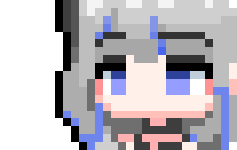
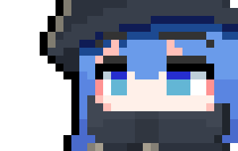
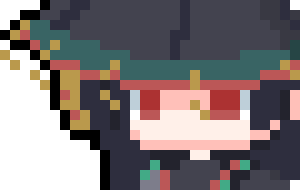
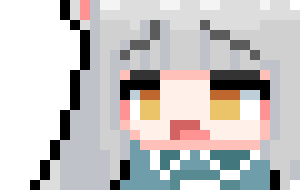
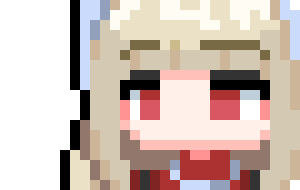

戰鬥編制
三名不重複角色
每個關卡都要先選隊，再排站位，戰術壓力從開局前就已經開始。
每個關卡都要先選隊，再排站位，戰術壓力從開局前就已經開始。
正式版把決策壓縮在短關卡裡，讓每一步站位與高度選擇都更直接。
你可以把點數全押在單點爆發，也能讓整隊同步前壓與改地形。
艾爾芙卡不是把角色丟上棋盤後才開始思考。從三人配隊、戰前站位，到回合內如何改變地形，整套戰術是一路串起來的。
角色會在指定區域內先行部署，不同開局站位會直接改變第一輪的優勢與路線。
戰場高度分成 1 到 3 級。高地加成、推落傷害與地形引爆都會左右每次交換。
每位角色都能在特定高度或條件下改用強化攻擊，但一旦啟動，整個回合節奏也會跟著改變。
影片最值得看的不是單發招式，而是誰先卡位、誰先改地、誰先把強化攻擊條件湊出來。
正式版的回合價值不是只看技能傷害，而是看你能不能在有限行動點數內，同時完成佈位、改地形與條件啟動。
從潮汐之子的水系控制，到赤城血族的印記與續戰，再到特林的跳躍與護陣，六位角色的條件分工非常明確。

琉波 潮汐之子
懸舵 古書控場
絳纓 赤城文書官
獅鈴 特林偽獅
維爾莉絲 血族貴族卡爾維恩的前哨站、血族封閉的赤城、被席拉姆尼撕開的洛瑟恩，以及北方的永夜海洋，共同構成了正式版的主要舞台與危機來源。
想親手體驗三人編隊、戰前佈陣、地形高度與強化攻擊，直接前往下載頁即可；想追蹤版本消息，也可以同步關注官方 Instagram。